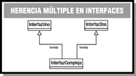

6.6.- Herencia de interfaces.
extends. Pero en este caso sí se permite la herencia múltiple de interfaces. Si se hereda de más de una interfaz se indica con la lista de interfaces separadas por comas.
Por ejemplo, dadas las interfaces InterfazUno e InterfazDos:
public interface InterfazUno {
// Métodos y constantes de la interfaz Uno
}public interface InterfazDos {
// Métodos y constantes de la interfaz Dos
}Podría definirse una nueva interfaz que heredara de ambas:
public interface InterfazCompleja extends InterfazUno, InterfazDos {
// Métodos y constantes de la interfaz compleja
}Autoevaluación
Retroalimentación
Falso
No. Aunque es cierto que no está permitida la herencia múltiple para clases, sí lo está para interfaces.Ejercicio resuelto
Localiza en la API de Java algún ejemplo de interfaz que herede de una o varias interfaces (puedes consultar la documentación de referencia de la API de Java).